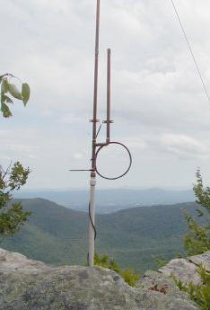
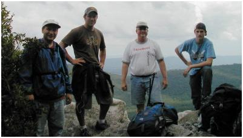
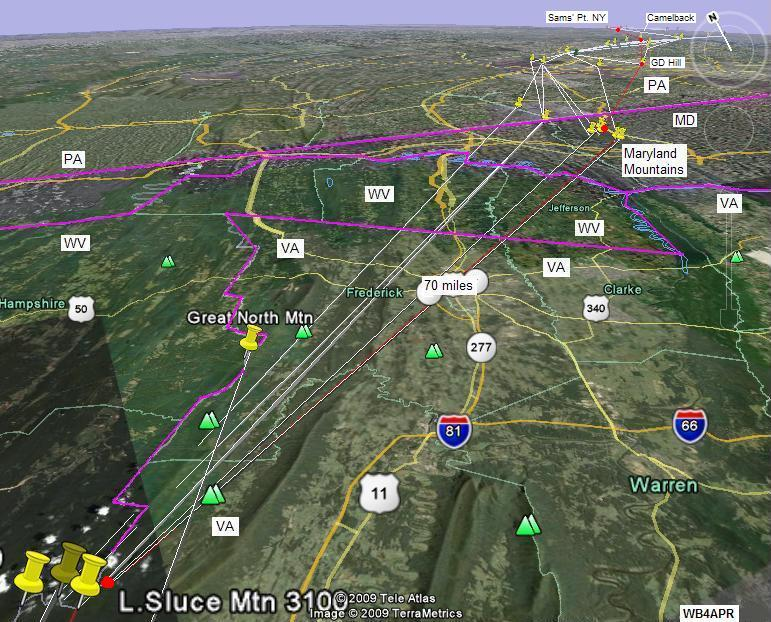
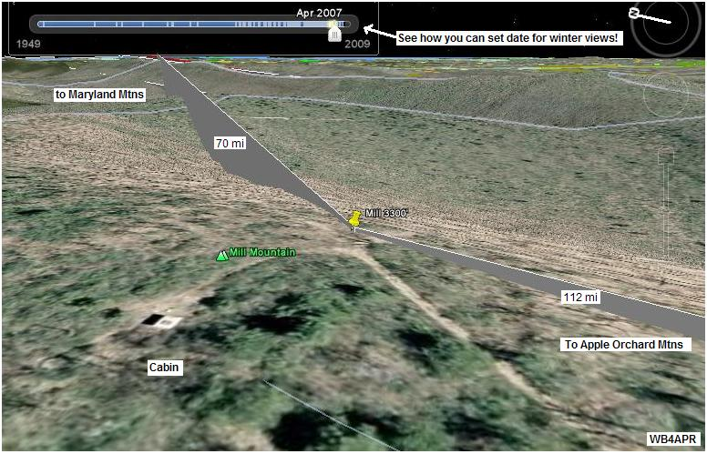
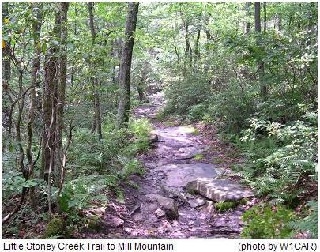
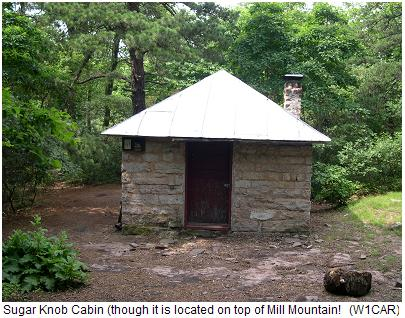
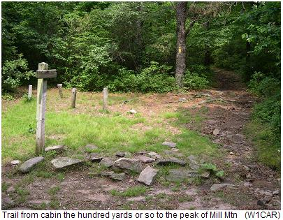
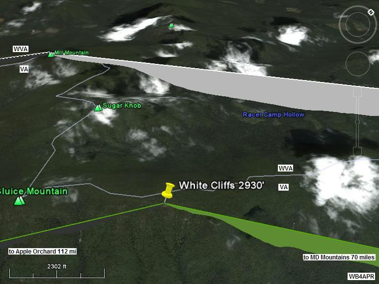
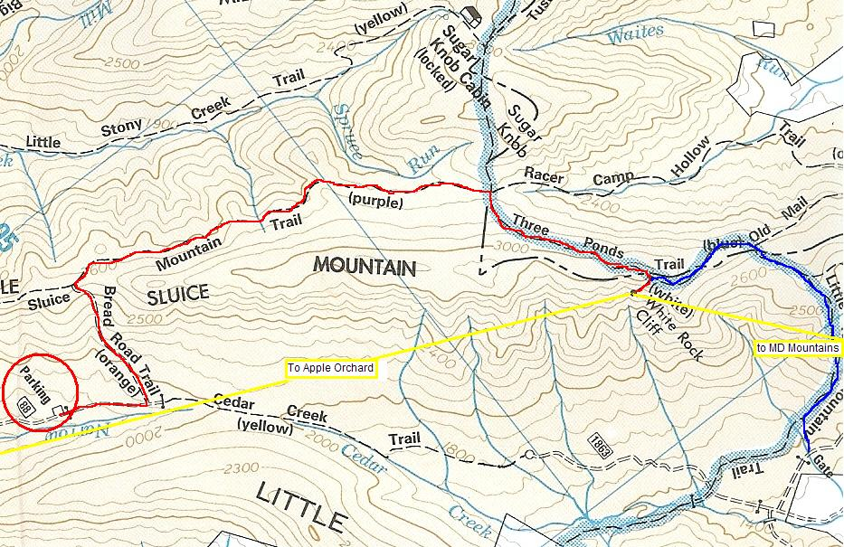
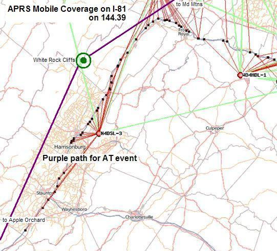

2013 Planning: John Huggins, our main RF plotter is leading the effort this year. See the summary spread sheet.
2012 Planning: Eric (W4EON) and John (KX4O) manned a new peak called Stony Man on the 21st of July Saturday. The link will be a few dB down, but should still be good.
2011 Planning: Eric (W4EON) and John (KX4O) are again planning to man this area. But this year they are going to Hawksbill The links are worse than from White Rock Cliffs, but they are much easier to get to.
2010 SUCCESS! John formed his team. And has filed his report for 2010. The good news is that they found shelter from the rain! And see the rest of their photo album.
2009 Report: Back in 2009, White Rock Cliffs (also called West Virginia Mountains in some of our documentation before we ended up on the VA side of the line) was operational for the event, and in communications northward, but not to the south due to problems at the next station. See 2009 report. and also see K4XO's web page and photos.
See the Golden Packet plan. . This is one of the 15 hill-top sites from Georgia to Maine activated for 6 hours on 26 July 2009 and planned for 25 July 2010 to attempt to relay a text message using hand-held radios the 2000 mile length of the Appalachain trail. This is to be a no impact Leave-No-Trace type of event of a few individuals at each site. . Other hikers equipped with APRS ham radios are welcome to participate after the initial golden packets are successful or after 2 PM..
The West Virginia Mountains are not on the AT, but are across the very long and consistent I-81 valley gving a great height above average terrain. The path from Apple Orchard Mountain on the AT near Roanoak has a clear 100 mile + shot to these WV mountains. But the problem is that none of the convenient peaks have any drive-up access and are fully tree covered. There are plenty of hiking trails, however, and this station will be one of the best challenges (next to Katahdin in Maine) for the rustic outdoorsman ham operators or a troop of scouts. The image to the right shows the bottom part of the 5/8ths wave J pole and the view to the Maryland Mountains. Further down is the Google Earth view of that path.
 ALTITUDE: . . . . . . . . . . . . 3300 feet (Mill Mountain) 2900' (White Rock Cliff)
POSITION:. . . . . . . . . . . . . 38-58-31N / 78-35-08W (38-58.52N / 78-35.14W for White Rock Cliff
LINK NORTHEAST:. . . . . Maryland Mountains (70 mi).
See
RF details
by KX4O
LINK SOUTHWEST:. . . . .Apple Orchard Mountain (111 mi, near Roanoke). Test with 146.685 T100.
See
RF details
REPEATER: . . . . . . . . . . . 147.300 Mount Weather repeater
. . . . . . . . . . . . . . . . . . . . . . . 147.165+ 167.9 W4VA Warrenton Repeater.
(Echolink #473997,KW4VA-R)
ECHOLINK NODE: . . . . WB3GXW-L #16504 on 147.195 T179, Same for voice.
. . . . . . . . . . . . . . . . . . . . . . W3ICF-R #14613 Frederick Md

INTERFERRENCE:. . . . . None, nothing for miles
TEAM LEADER: . . . . . . . John Huggins KX4O, john*johnhuggins dot com (3rd to RT)(2010)
. . . . . . . . . . . . . . . . . . . . . . . David Bern W2LNX*amsat.org - also intrested in Hawksville Mtn in Shenandoah?
. . . . . . . . . . . . . . . . . . . . . . .
Also attempted to contact
Eastern Panhandle Simplex Net on 147.54 MHz (EPSN)

COMMENTS: .
John Huggins, KX4O has volunteered to be the team leader for the White Rock Cliffs which are on the VA/WVA state line area and he has really gotten onboard with some RF terrain analysis which shows us exacly what to expect from each site. Initially a Cabin on top of Mill Mountain was considered a possible site because of its peak altitude. But it is covered with trees and so we expanded the search for a site that would take less of a mast to the two desired directions.

DETAIL LINK ANALYSIS BY KX4O: Be sure to follow the two RF links at the
top of this page to see the excellent and very detailed RF link analysis
performed for every link in this project by KX4O John Huggins.
Each RF link shows the terrain map
elevations, the AT trail in yellow, the RF path loss itself
including fresnel zones and finally a
statistical plot of the probabilities of link availability. We will very
much be looking at the results of this project compared to the pre-eventanalysis and predictions.
All of his links are shown on his
AT Links Page.
Pete Lascell, W4WWQ reported from Forest, VA: Little Sluce Mountain on the VA/WV line west of Front Royal doesn't have a road to the top. It is a 112 mile path from Apple Orchard. It might be better to look at the peaks west such as Sugar Knob and Mill Mountain.
Chad Rudolph W1CAR [chad*chadrudolph.com] reports: Mill Mountain is only accessable by hiking trail. I've hiked it before from Wolf Gap to Sugar Knob ...and the cabin is Sugar Knob cabin which is owned by the PATC and normally closed unless rented by PATC hikers. You can see it in the image below. Sugar knob is about 4 miles from the trailhead. There is a side trail from a fire road to Big Schloss on Mill Mt. that is about 2 miles....but it is very steep and takes about 2hrs to ascend.

WB4APR comments: The view above (April without trees) shows the cabin on the left and the trails. Chad confirms that these trees would need a 60' mast or more to clear. The view above is looking Northeast to the Maryland Mountains and easily clears the highest point (L.Sluce) only about 5 miles out for a clean shot the rest of the way to Maryland.. Below are some photos provided by Chad:
 .  . 
Based on Chads comments and the trees in three images and the fact that everything will have to be hiked-in, the alternate site called White Rock Cliffs was fouind on the eastern side of Little Sluce Mountain shown below:

From this view and the radio paths from Apple Orchard and then on to Maryland Mountains shows that operating on this rock out-cropping will eliminate any need for antenna masts since both links are on this same side of the mountain. We need boots on the ground to confirm this site. The white lines in the image are the VA/WVA state line.
The image below is a trail map that Chad scanned for the project to help the team find the closest road and parking place for their assent...

The trail map indicates there are two trail approaches to White Rock Cliff. I have highlighted one in Red and the other in Blue. The yellow lines show approximately the 112 mile path to AO and 70 or so miles to the Maryland mountains. Looks like we will need some good hikers to make this site work.. This next view to the Southwest shows the 112 mile long path down to Apple Orchard Mountain near Roanoke.

In this view, I have the Google Earth atmosphere turned off, so the sky is black even in daylight. Notice how much more revealing these views taken in April contrast with the heavy tree foleage of the first summer view. Operating from White Rock Cliff will solve the tree problem because both links are to the same side of the hill and the Cliffs will give us a station with no trees.

The image above is a plot of APRS mobile coverage on I-81 using 144.39 existing APRS system. In purple you can see the path we hope to use for the AT special event.
Bob, WB4APR
See my other GENERAL page on APRS applications and Ideas on the AT
Return to the APRS HOMEPAGE or SiteMap.
{kind=link}